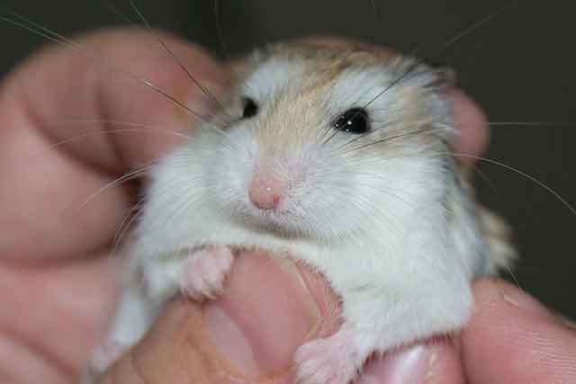
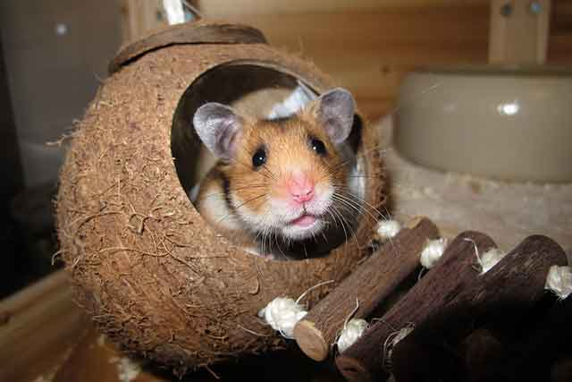
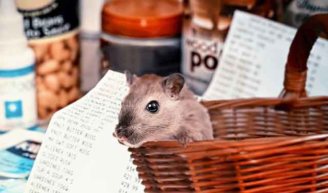
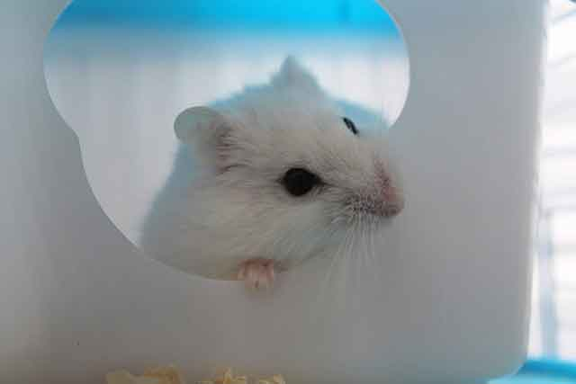
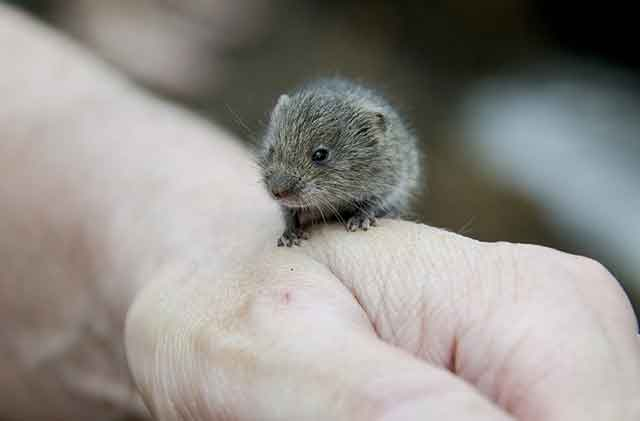

햄스터와 친해질 수 있을까요? 햄스터 신뢰 얻기!
햄스터는 많은 분이 선호하는 반려동물입니다. 그래서 자꾸 만지고 싶고 같이 놀고 싶다는 생각을 합니다. 하지만 햄스터가 처음부터 사람을 좋아하거나 손길을 타지는 않습니다. 오히려 자신보다 엄청나게 큰 사람에게 위협을 느낄 수 있겠죠. 그래서 햄스터와 친해지기 위해서는 천천히 다가가는 노력과 정성이 필요합니다. 무작정 친해지기보다는 어느 정도 핸들링이 필요하다는 것이죠. 이런 노력을 꾸준히 보인다면, 햄스터도 주인에게 마음을 여는 모습을 보일 수 있는 데요. 햄스터와 친해지는 방법! 햄스터 신뢰 얻기, 함께 알아볼게요.
"주변 환경에 적응하기"
햄스터는 추위에 매우 약합니다. 그래서 항시 따뜻한 온기가 느껴질 수 있는 공간에 머무르는 것이 좋습니다. 또, 외부 자극으로 스트레스받지 않도록 관리하는 것이 중요합니다. 따라서 좋은 환경에 우리를 놓고 사람이나 외부에서 시끄러운 소리가 들리는 곳보다는 조용하고 안정적인 환경이 좋습니다. 더불어 햄스터는 야행성으로 사람과 생활 방식이 다르므로 이런 점을 고려한 장소에 두는 것이 좋습니다.
"조심스럽게 친해지기"
햄스터가 일정한 적응 기간을 거친 후에 햄스터에게 다가가는 것이 좋습니다. 적응 기간이라는 것은 주변 환경에 적응하고 우리 안에 설치된 각종 기구와 친해지는 것을 말합니다. 이 과정이 끝났다면 천천히 다가가 시끄럽지 않고 조용한 소리로 햄스터와 대화를 이어갑니다. 너무 자극적인 소리로 다가간다면 햄스터가 놀랄 수 있습니다.
"존재 인식시키기"
천천히 다가가 햄스터에게 자신의 존재를 인식시킬 필요가 있습니다. 가서 만지고 톡톡 건드리는 것이 아니라 바라보고 조용한 목소리로 이야기하는 것입니다. 햄스터 역시 '사람'이라는 새로운 환경에 적응할 기간이 필요하고 이러한 노력을 며칠간 계속되어야 합니다.
어느 정도 사람이라는 인식이 됐을 때는 간식으로 천천히 다가가 보는 것도 좋습니다. 간식은 동물과 친해지는 아주 좋은 매개체죠. 햄스터가 경계를 풀지 않고 있을 수도 있으므로 사람 손에 있는 간식을 가져가지 않는다면 무리하게 기다리기보다는 바닥에 두고 먹을 수 있도록 하는 것이 좋습니다.
"핸들링 시작하기"
햄스터는 본격적으로 핸들링하기 시작하면, 우선 손을 깨끗하게 씻고 시작해야 합니다. 햄스터는 작은 동물로 질병에 걸리기 쉽습니다. 그리고 적응 기간이 끝났다면, 천천히 손을 올려두고 햄스터가 다가올 수 있도록 유도해야 합니다. 손가락을 움직이기보다는 가만히 두고 햄스터가 안전한 곳으로 인식될 수 있게 도와줘야 합니다.
"손안에 들어왔다면, 천천히"
햄스터가 손을 어려워하지 않고 적응한 후에 다가왔다면 손을 천천히 들어 올려 살짝 쓰다듬어 주거나 진정을 시키는 것도 도움이 됩니다. 혹시 햄스터를 들어 올릴 때 비명을 지른다면, 천천히 다시 내려놓고 다시 친해질 기회를 만드는 것이 좋습니다. 아직 준비되지 않았다는 뜻이겠죠!
꾸준한 반복 끝에 햄스터와 친해질 수 있을 것입니다. 햄스터는 인간을 같은 크기가 아닌 엄청나게 큰 포식자쯤으로 여길 수 있으니 이점을 참고하시고 핸들링에 꼭 성공하시길 바랍니다.
[출처] 햄스터와 친해질 수 있을까요? 햄스터 신뢰 얻기 ｜ 작성자 브런치